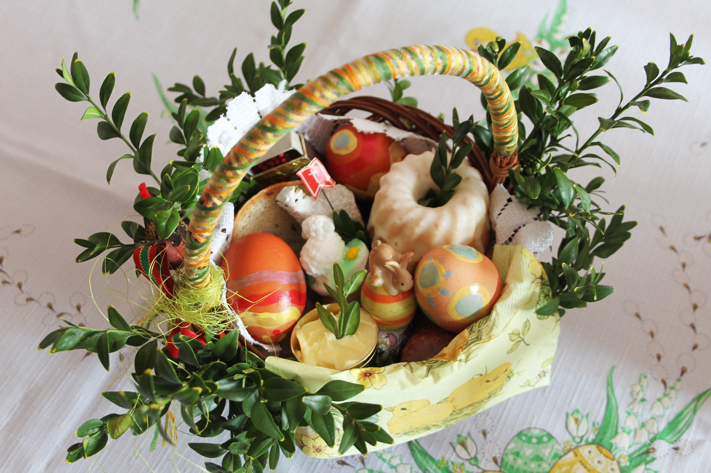
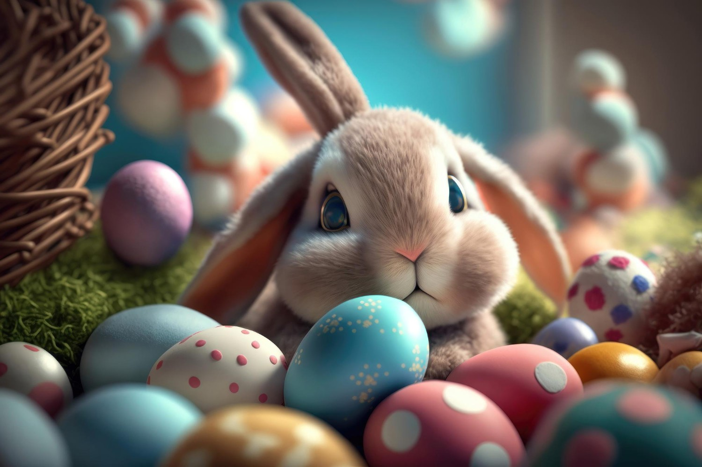

Wielkanoc – Święto Odrodzenia i Nadziei
Wielkanoc to najważniejsze święto w kalendarzu chrześcijańskim, które symbolizuje zwycięstwo życia nad śmiercią i niesie ze sobą przesłanie nadziei.W Polsce jest to czas bogaty w tradycje, które łączą duchowość z radosnym celebrowaniem w gronie rodziny.
Święta rozpoczynają się od Wielkiego Tygodnia, pełnego refleksji i przygotowań. Wielka Sobota to dzień święcenia pokarmów w koszyczku wielkanocnym – jajka, chleba, soli, kiełbasy i innych symboli życia oraz dostatku.
Niedziela Wielkanocna przynosi radosne śniadanie, podczas którego rodziny dzielą się jajkiem i wspólnie świętują.

Nieodłącznym elementem jest także Lany Poniedziałek, który wnosi dużo zabawy i uśmiechu poprzez tradycyjne polewanie wodą, symbolizujące oczyszczenie i nowe życie.
Wielkanoc to czas radości, odrodzenia i wspólnoty, który przypomina nam o sile miłości i wiary. 🐣🌸
